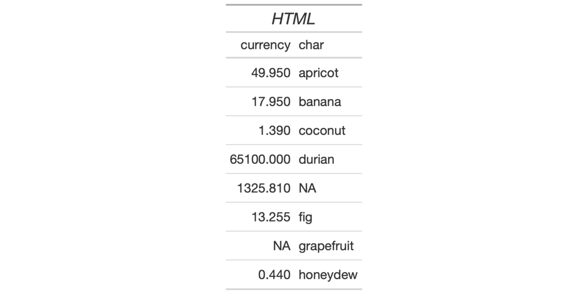

| html {gt} | R Documentation |
For certain pieces of text (like in column labels or table headings) we may
want to express them as raw HTML. In fact, with HTML, anything goes so it can
be much more than just text. The html() function will guard the input HTML
against escaping, so, your HTML tags will come through as HTML when
rendered... to HTML.
html(text, ...)
text, ... |
The text that is understood to be HTML text, which is to be preserved. |
A character object of class html. It's tagged as an HTML fragment
that is not to be sanitized.

7-2
Other Helper Functions:
adjust_luminance(),
cell_borders(),
cell_fill(),
cell_text(),
cells_body(),
cells_column_labels(),
cells_column_spanners(),
cells_footnotes(),
cells_grand_summary(),
cells_row_groups(),
cells_source_notes(),
cells_stub_grand_summary(),
cells_stub_summary(),
cells_stubhead(),
cells_stub(),
cells_summary(),
cells_title(),
currency(),
default_fonts(),
escape_latex(),
google_font(),
gt_latex_dependencies(),
md(),
pct(),
px(),
random_id()
# Use `exibble` to create a gt table;
# when adding a title, use the `html()`
# helper to use html formatting
tab_1 <-
exibble %>%
dplyr::select(currency, char) %>%
gt() %>%
tab_header(
title = html("<em>HTML</em>"))